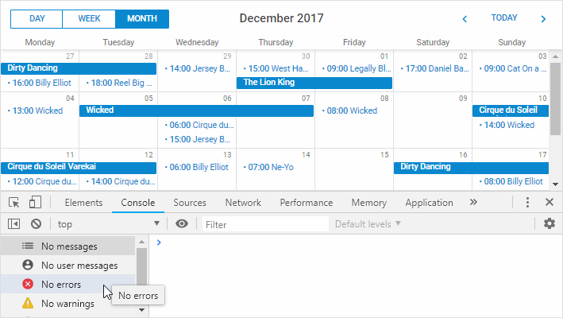
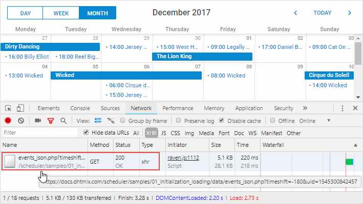
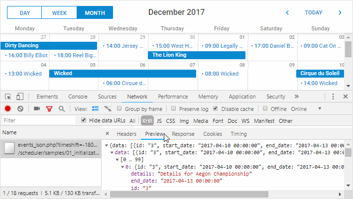
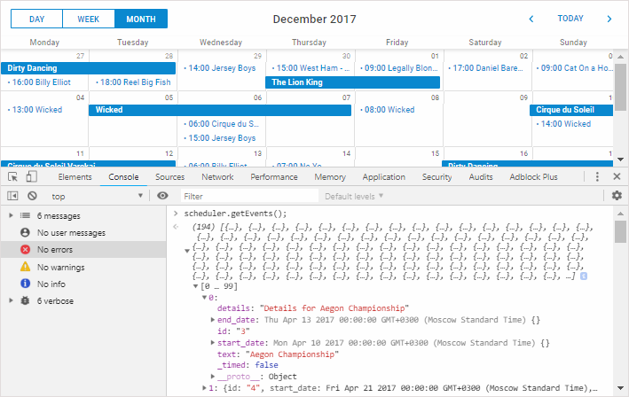

1. You try to implement the backend API either manually or following our tutorials, but Scheduler doesn't show any events when you open the page.
or
2. You have troubles with saving changes to the backend.
There may be many reasons and solutions for incorrect behavior on different platforms, which we're not going to touch in this article.
Our goal here is to walk you through the common steps of investigating this kind of issue. Once you locate the issue and understand why the app is not working, the fix is usually trivial.
1. Open the browser dev tools and reload the page. Do you see any error messages in the browser console?

2. If there are any, evaluate the errors and decide whether you are able to deal with them by yourself. Otherwise, proceed to the next step.
1. Open the Network panel, make sure XHR requests are visible.
2. Reload the page and find a request that should load data from the backend. Make sure it goes to the correct URL and check the response status.

Are there any errors?
404 response status would mean there is either an incorrect URL passed to the scheduler.init method or a problem in the routing settings of your application.
Select the request and check the response preview or the raw response content.

Does the response look similar to the expected data format.
You can be sure that something is wrong with the backend code or database connection settings.
Usually, the error response contains enough info to figure out what causes the issue. If you see a generic 500 server error message, you may need to temporary disable custom error pages on your server in order to see
the actual error. It's done differently on various platforms. If you're not sure where to start, just google "disable custom error page in <%your server or framework%>".
Take a look at the id, start_date and end_date properties.
id - items with the same id will be merged. If you have five events with matching id, Scheduler will display only one.
start_date, end_date - make sure date formats match the format you specify in the date_format config of Scheduler
Read details about the data properties.
If the actual date format doesn't match what scheduler expects, events will either have invalid dates and won't be displayed at all, or will be moved to some later dates.
Usually xml_date is set before the scheduler.init call like this:
scheduler.config.xml_date="%Y-%m-%d %H:%i";
Check what is stored in your database, probably the issue is there. If date formats don't match, either change the date_format config, or modify the code that serialized task dates before outputting them to the client.
1. Open the browser console and run scheduler.getEvents().
2. Inspect the console output. You'll likely see an array of events.

Again, you can check the start_date and end_date properties of some records. You may notice either invalid date values or something obviously unexpected,
e.g. year 1970 or year 2038. This will obviously indicate a problem with the date_format format.
If you use the recurring extension, scheduler.getEvents() won't return any data, unless you limit the output by the from/to date parameters.
Try removing the recurring events extension from the page for this check.
Or, if you use the Units or Timeline views, events may be not displayed, if they are not mapped to any section of the unit/timeline.
In order to check it, you can use skip_incorrect:false for the Units view:
scheduler.createUnitsView({
name:"unit",
...
skip_incorrect:false
});
Or, show_unassigned: true for the Timeline view:
scheduler.createTimelineView({
name:"timeline",
...
show_unassigned: true
});
If that is the case, events will appear in the first section of the Units/Timeline view after you change the config and reload.
Then check the values of the property or y_property options of the Units or Timeline views respectively, and the values of the appropriate properties of the event.
If you don't see any obvious issues there, you may want to check your code, probably events are hidden by filter.
If none of the above helps, or if you don't see neither events, nor console errors, try to post your question at our forum or contact our tech support regarding your issue.
Please be sure to provide all the info you've collected completing the steps above.
Also, our team will need a minimal reproducible demo: either a standalone package with a simplified app (the scheduler page, all required files, a database dump with some test data, or a static JSON file with data you try to load), or an online link where we could check the issue in the browser.
Back to top